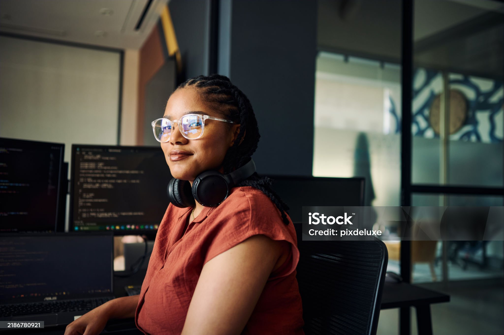

Student Photo

Student Profile
- Name: Snehal Dhore
- Date Of Birth: 27/08/2008
- Gender: Female
- Roll No: 53
- Program: Bachelor of Computer Science
Skills
- HTML: Creating and structuring web pages.
- MySQL: Creating and managing databases using SQL queries.
- Problem Solving: Finding solutions to problems step by step.
- Logical Thinking: Using logic to understand problems and make decisions.
- Communication Skills: Sharing ideas and information clearly with others.
Hobbies
- Writing
- Playing Games
- Editing Videos
- Coding Side Projects
Career Goals
My primary career goal is to become a full-stack web developer and eventually transition into a software architect role. I aim to work on impactful products that solve real-world problems and contribute to open-source communities.
About Me
I am a passionate and curious learner who enjoys building things with code. I believe in continuous improvement, teamwork, and sharing knowledge with peers. Outside of academics, I enjoy participating in hackathons, exploring new technologies, and mentoring junior students.
I value discipline, consistency, and lifelong learning. My mission is to grow every day, both as a developer and as a human being.
Contact
See the Contact page for how to reach me.